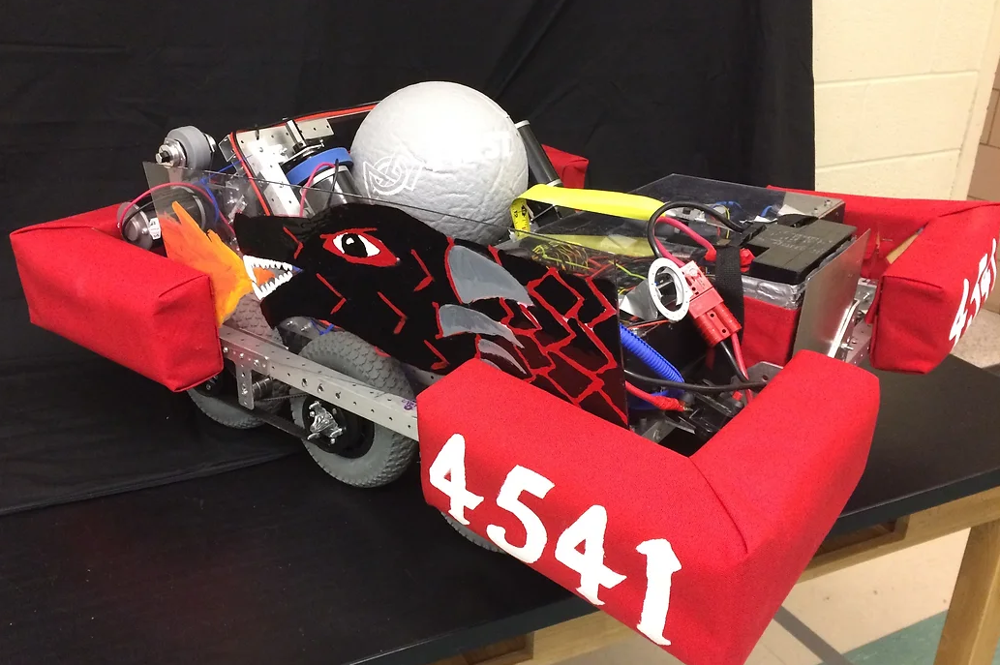

During this competition the Cavineer's robot Finnegan was challenged to capture the opposing alliance's tower by shooting boulders at it, and finally, climbing the tower to face the "boss" and capture it for extra points. The game was played on a
field with various obstacles and challenges, such as drawbridges, moats, and portcullises, which robots had to cross strategically.

Competition 5 - 20 - 1
This season the Cavineers ranked 34th and 30th in their second becoming 1st pick of alliance 7 and being eliminated in the quarterfinals. The Cavineer's record was 19 wins and 22 losses. The Cavineer's ended in 94th in the district.